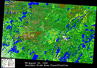

More and more people are getting involved in the BOREAS Project, and they are being called upon to do presentations about BOREAS and their work with it. This page is designed to give you access to useful BOREAS artwork and figures for use in your presentations. As more art becomes available, it will be added to this page. If there is anything in particular that you would like to have, please send some e-mail to the Webmaster and request it.
| Logos and Official Stuff | ||
|---|---|---|
| Large BOREAS Logo (720x480, 145K) | Large NASA Logo (340x270, 89K) | Large CCRS Logo Banner (1076x163, 10K) |
| General BOREAS Maps | ||
|---|---|---|
The boreal forest around the world, north polar view (500x680, 200K) | ||
BOREAS Study Region (340x210, 10K) |
Canada Boreal Forest Map (530x330, 30K) |
 BOREAS Meteorological Network (770x570, 120K) |
| BOREAS Northern Study Area (NSA) Maps | ||
|  | ||
| General Map of the NSA (480x240, 20K) | Satellite image of the NSA (Landsat TM July 25, 1990) | Land Cover Classification image of NSA (July 25, 1990) |
| BOREAS Southern Study Area (SSA) Maps | ||
 |  | |
| General Map of the SSA (530x290, 28K) | Satellite image of the SSA (Landsat TM Aug 6, 1990) | Land Cover Classifcation image of the SSA (Aug 6, 1990) |
| Pictures and Images | |||
|---|---|---|---|
 |  |  |  |
| Standard SSA scaffold-type flux tower (SSA-OJP) | Standard NSA truss-type flux tower (NSA-OJP) | Mixed forest from the SSA (SSA-Mix) | Field work in progress at SSA-OJP by TGB-10 |
More pictures and artwork will be added....


{kind=link}
{kind=link}
{kind=link}
{kind=link}
{kind=link}
{kind=link}
{kind=link}
{kind=link}
{kind=link}
{kind=link}
{kind=link}
{kind=link}
{kind=link}
{kind=link}